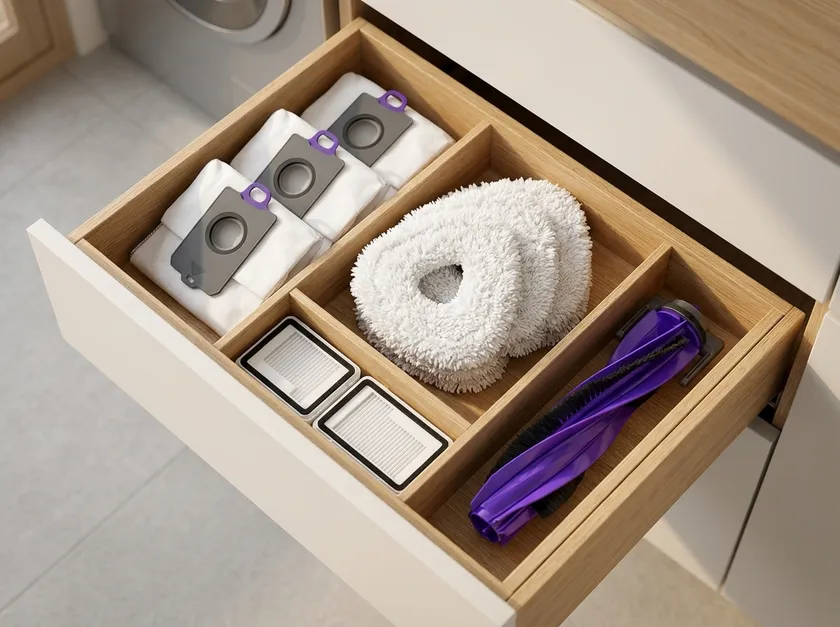

나르왈 (Narwal)
나르왈 프레오 X 울트라 소모품 교체 주기｜본체 전용 더스트백·삼각 걸레 1년 세트
글·구성: 제이상점 · 기종별 1:1 호환 실물 점검 · 교체 주기 비교표 · 스마트스토어 패키지 안내

핵심 관리 · 선택 체크포인트
- 요즘 집에서 겪기 쉬운 본체 내장형 일회용 더스트백 구조로 조용하게 잘 쓰던 나르왈 프레오 X 울트라의 전용 먼지봉투와 삼각 물걸레 패드 교체 시기가 겹친 순간, 혹시 우리 집 로봇청소기 이야기 같으신가요?
- 나르왈 프레오 X 울트라 구매 전 꼭 짚어볼 실물 부품 디테일: 호환 소모품을 고를 때 가장 먼저 살펴야 할 핵심은 프레오 X 울트라 본체 내장형 전용 더스트백과 원추형 제로탱글 브러시·삼각 패드의 정밀한 체결감입니다.
- 나르왈 프레오 X 울트라 소모품 교체 주기 & 전용 규격 한눈 비교표: 앱 잔여 수명 퍼센트(%)와 함께 아래 실물 마모 신호를 대조해 보시면 교체 타이밍을 놓치지 않고 나르왈 프레오 X 울트라를 최적 상태로 유지할 수 있습니다.
- 단품 구매 vs 패키지 선택, 나르왈 프레오 X 울트라 옵션 고르는 현실 기준: 프레오 X 울트라는 본체 전용 더스트백과 삼각 물걸레 패드가 핵심 소모품인 만큼 단품 수급보다
- 현재 대표 구성 기준가 63,900원대(옵션·할인 혜택에 따라 스토어 결제 화면 기준 상이)로 운영 중이니 우리 집 청소 주기와 남은 재고를 대조한 뒤 제이상점 나르왈 프레오 X 울트라 스마트스토어 상세 옵션에서 가장 실속 있는 구성을 선택해 보세요.
실물 부품 디테일 · 관리 구성 이미지




부품 규격 · 점검 기준표
| 핵심 소모품 구분 | 나르왈 프레오 X 울트라 전용 규격 특징 | 체감 교체 신호 & 권장 관리 기준 |
|---|---|---|
| 프레오 X 전용 본체 더스트백·필터 | 본체 내부 슬롯 장착형 일회용 먼지봉투 + 필터 | Z 울트라 스테이션 봉투와 호환 불가 · 압축 포집 후 통째로 위생 교체 |
| 원추형 플로팅 메인브러시 | 한쪽 끝이 열린 제로탱글 고무·솔 브러시 | 긴 머리카락 무엉킴 유로 유지 및 솔 탄성 저하 시 교체 |
| 둥근 삼각형 물걸레 패드 | 삼각 센터홀 도톰한 화이트 극세사 패드 쌍 | 세척 후 통풍 매트에서 완전 건조하며 예비 패드와 2매 동시 교대 |
💡 교체 주기가 겹치는 필터·브러시·물걸레·더스트백은 단품 배송비를 여러 번 내기보다 나르왈 프레오 X 울트라 기간별 세트(3개월·6개월·1년)로 미리 구비해 두면 물세척 후 24시간 교대 건조까지 끊김 없이 관리할 수 있습니다.
자주 묻는 질문 (FAQ)
Q. 본체 내장형 더스트백은 보통 어느 시점에 새것으로 바꿔 주는 게 좋나요?
A. 반려동물 유무와 청소 빈도에 따라 보통 4~7주 간격, 또는 앱 알림이 뜨거나 흡입 바람 소리가 답답해졌을 때 미루지 않고 교체해 주시면 본체 모터 수명과 냄새 방지에 유리합니다.
Q. 나르왈 프레오 X 울트라의 프레오 X 전용 본체 더스트백·필터 규격과 관리 기준은 무엇인가요?
A. 본체 내부 슬롯 장착형 일회용 먼지봉투 + 필터 규격을 사용하며, Z 울트라 스테이션 봉투와 호환 불가 · 압축 포집 후 통째로 위생 교체 기준으로 점검·교체하면 청소 효율을 안정적으로 유지할 수 있습니다.
Q. 나르왈 프레오 X 울트라의 원추형 플로팅 메인브러시 규격과 관리 기준은 무엇인가요?
A. 한쪽 끝이 열린 제로탱글 고무·솔 브러시 규격을 사용하며, 긴 머리카락 무엉킴 유로 유지 및 솔 탄성 저하 시 교체 기준으로 점검·교체하면 청소 효율을 안정적으로 유지할 수 있습니다.
제이상점 1:1 검수 추천 패키지 · 구매 안내
메인 추천 구성
대표 구성 참고가 63,900원대 (옵션·쿠폰별 스마트스토어 결제 화면 기준)
1년 세트 (세제 미포함)6개월 세트 (세제 미포함)3개월 세트 (세제 미포함)
![[호환] 나르왈 프레오 Z 울트라 소모품 물걸레 더스트백 브러쉬 필터 제이상점 1년 패키지](../../assets/img/narwal-freo-z-ultra-product-52ea4eea.webp)
함께 많이 찾는 보충 구성
대표 구성 참고가 62,400원대 (옵션·쿠폰별 스마트스토어 결제 화면 기준)
1년 세트 (세제 미포함)6개월 세트 (세제 미포함)3개월 세트 (세제 미포함)
☑️ 주문 전 확인해 두면 좋은 제이상점 안심 포인트
· 기종별 1:1 전용 규격 검수: 모델명·연식에 맞는 호환·정품 구성을 검수해 오주문 불안을 줄였습니다.
· 해외직배송 미리 주문 팁: 중국 구매대행·해외직배송 상품이므로 마지막 여분 1개를 꺼내 쓰는 시점에 개인통관고유부호와 함께 여유 있게 주문해 두시면 훨씬 경제적인 비용으로 끊김 없이 교체하실 수 있습니다.
· 기종별 1:1 전용 규격 검수: 모델명·연식에 맞는 호환·정품 구성을 검수해 오주문 불안을 줄였습니다.
· 해외직배송 미리 주문 팁: 중국 구매대행·해외직배송 상품이므로 마지막 여분 1개를 꺼내 쓰는 시점에 개인통관고유부호와 함께 여유 있게 주문해 두시면 훨씬 경제적인 비용으로 끊김 없이 교체하실 수 있습니다.
📖 더 많은 가정 내 사용 스토리와 상세 후기가 궁금하시다면
📱 네이버 블로그 모바일 원문 보기 ↗